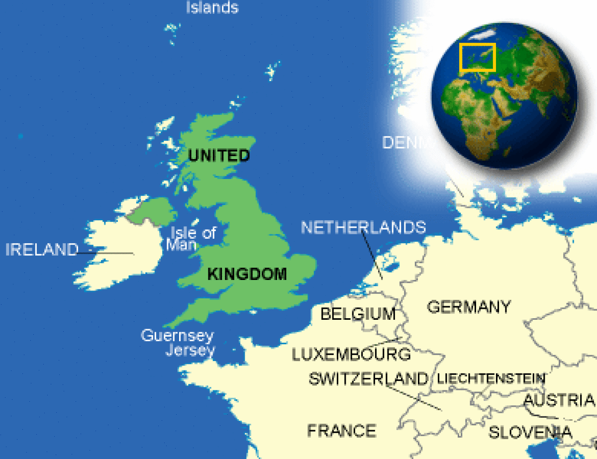

The Wayback Machine - https://web.archive.org/web/20231209214746/https://www.countryreports.org/country/UnitedKingdom.htm
Where is United Kingdom located?
What countries border United Kingdom?

United Kingdom Weather
What is the current weather in United Kingdom?
United Kingdom Facts and Culture
What is United Kingdom famous for?
- Cultural Attributes: People mostly work for leisure opportunities. Food will always be available even if it is paid for by the government.... More
- Family: Most English families are small, with one or two children. About 80% of families with children are two-parent families and... More
- Personal Apperance: Typically, men wear a suit and tie or smarter pants and shirts. A woman wears a jacket and skirt/pants, although... More
- Recreation: Boys start playing Rugby at an early age. It is usually played in school or on a community basis because... More
- Diet: The traditional British diet is characterized by foods such as roast beef, fish and chips, shepherd's pie, and bangers and... More
- Food and Recipes: A typical family will eat three main meals per day. Breakfast will usually take place at 7 AM, lunch at 1... More
- Visiting: Upon leaving one would give a handshake/hug and a wave as they depart. Upper and upper-middle-class people would give a... More
United Kingdom Facts
What is the capital of United Kingdom?
| Capital | London |
| Government Type | parliamentary constitutional monarchy; a Commonwealth realm |
| Currency | Pound Sterling (GBP) |
| Total Area |
94,058 Square Miles 243,610 Square Kilometers |
| Location | Western Europe, islands - including the northern one-sixth of the island of Ireland - between the North Atlantic Ocean and the North Sea; northwest of France |
| Language |
English note: the following are recognized regional languages: Scots (about 30% of the population of Scotland), Scottish Gaelic (about 60,000 in Scotland), Welsh (about 20% of the population of Wales), Irish (about 10% of the population of Northern Ireland), Cornish (some 2,000 to 3,000 in Cornwall) |
| GDP - real growth rate | 2.5% |
| GDP - per capita (PPP) | $41,200.00 (USD) |
United Kingdom Demographics
What is the population of United Kingdom?
| Ethnic Groups | white (of which English 83.6%, Scottish 8.6%, Welsh 4.9%, Northern Irish 2.9%) 92.1%, black 2%, Indian 1.8%, Pakistani 1.3%, mixed 1.2%, other 1.6% |
| Nationality Adjective | British |
| Nationality Noun | Briton(s), British (collective plural) |
| Population | 65,761,117 |
| Population Growth Rate | 0.55% |
| Population in Major Urban Areas | LONDON (capital) 9.005 million; Birmingham 2.272 million; Manchester 2.213 million; West Yorkshire 1.625 million; Glasgow 1.137 million; Newcastle upon Tyne 874,000 |
| Predominant Language |
English note: the following are recognized regional languages: Scots (about 30% of the population of Scotland), Scottish Gaelic (about 60,000 in Scotland), Welsh (about 20% of the population of Wales), Irish (about 10% of the population of Northern Ireland), Cornish (some 2,000 to 3,000 in Cornwall) |
| Urban Population | 79.6% |
United Kingdom Government
What type of government does United Kingdom have?
- Executive Branch: chief of state: King CHARLES III (since 8 September 2022); Heir Apparent Prince WILLIAM (son of the king, born 21... More
- Suffrage: 18 years of age; universal More
- Citizenship: citizenship by birth: no citizenship by descent only: at least one parent must be a citizen of the United Kingdom dual citizenship... More
- National Holiday: the UK does not celebrate one particular national holiday More
- Constitution: history: unwritten; partly statutes, partly common law and practice amendments: proposed as a “bill” for an “Act of Parliament” by the... More
- Independence: 12 April 1927 (Royal and Parliamentary Titles Act establishes current name of the United Kingdom of Great Britain and Northern... More
United Kingdom Video
YouTube: LoescherVideo Loescher Voicing Culture Royal Family
United Kingdom Geography
What environmental issues does United Kingdom have?
- Overview: The islands comprising the United Kingdom of Great Britain and Northern Ireland (UK) lie off the northwest coast of the... More
- Climate: Prevailing southwesterly winds, influenced by the Gulf Stream, make Britain's climate temperate and equable year round. Weather patterns frequently change,... More
- Border Countries: Ireland 360 km More
- Environment - Current Issues: continues to reduce greenhouse gas emissions (has met Kyoto Protocol target of a 12.5% reduction from 1990 levels and intends... More
- Environment - International Agreements: party to: Air Pollution, Air Pollution-Nitrogen Oxides, Air Pollution-Persistent Organic Pollutants, Air Pollution-Sulfur 94, Air Pollution-Volatile Organic Compounds, Antarctic-Environmental Protocol,... More
- Terrain: mostly rugged hills and low mountains; level to rolling plains in east and southeast More
United Kingdom Economy
How big is the United Kingdom economy?
- Economic Overview: The UK, a leading trading power and financial center, is the third largest economy in Europe after Germany and France.... More
- Industries: machine tools, electric power equipment, automation equipment, railroad equipment, shipbuilding, aircraft, motor vehicles and parts, electronics and communications equipment, metals,... More
- Currency Name and Code: Pound Sterling (GBP) More
- Export Partners: Germany 10.9%, US 9.9%, Netherlands 7.9%, France 7.4%, Switzerland 7.1%, Ireland 6%, Belgium 5.3% More
- Import Partners: Germany 12.5%, China 8.2%, Netherlands 7.1%, US 7%, France 5.7%, Belgium 4.8%, Norway 4.7% More
United Kingdom News and Current Events
What current events are happening in United Kingdom?
Source: Google News
United Kingdom Travel Information
What makes United Kingdom a unique country to travel to?
Country Description
The United Kingdom of Great Britain and Northern Ireland is a highly developed constitutional monarchy composed of Great Britain (England, Scotland, and Wales) and Northern Ireland. Read the Department of State Fact Sheet on the United Kingdom (UK) for additional information on U.S.-UK relations. Gibraltar is a UK Overseas Territory bordering Spain, located at the southernmost tip of Europe at the entrance to the Mediterranean Sea; it is one of 13 former British colonies that have elected to retain political ties with London. Tourist facilities are widely available throughout the United Kingdom and Gibraltar.
Crime
The United Kingdom and Gibraltar benefit from generally low crime rates. Overall crime rates have decreased over the past decade; however, according to Metropolitan Police statistics, serious crime (i.e. assault, robbery, burglary, gun-enabled crimes, and rape) in some London boroughs has increased. As with any major metropolitan city, U.S. citizens are urged to be cautious and aware of their surroundings.Typical criminal incidents include pick pocketing, mugging, and “snatch and grab” theft of mobile phones, watches, and jewelry. Theft of bags left unattended in restaurants, pubs, hotel lobbies and parked cars is common. Thieves often target unattended cars parked at tourist sites and roadside restaurants, looking for laptop computers and handheld electronic equipment - especially global positioning satellite (GPS) equipment. Pickpockets target tourists, especially at crowded public and historic sites, restaurants, and bus stops, as well as on buses, trains, and the London Underground.
U.S. citizens should also be alert to other criminal schemes, such as imposters posing as undercover police officers and "fining" tourists for bogus minor offenses (littering or not having ID documents, for example). A legitimate Metropolitan Police Services officer will never demand an immediate cash payment from a citizen or tourist.
You should avoid walking alone in isolated areas, including public parks, especially after dark, as these are advantageous venues for muggers and thieves. You should be especially careful using underground pedestrian tunnels at night or when there is little foot traffic. As a general rule, either walk the extra distance to use a surface crossing or wait until there are other adult pedestrians entering the tunnel.
In London, you should use only licensed Black Cabs or car services recommended by hotels or tour operators. Unlicensed taxis or private cars posing as taxis may offer low fares, but are often uninsured and may have unlicensed drivers. In some instances, travelers have been robbed and/or raped while using these cars. You can access 7,000 licensed Black Cabs using one telephone number: 087-1871-8710. This taxi booking service combines all six of London’s radio taxi circuits, allowing you to telephone 24 hours a day if you need a cab. Alternatively, to find a licensed minicab, text HOME to 60835 on your mobile phone to get the telephone number to two licensed minicab companies in the area. If you know in advance when you will be leaving for home, you can pre-book your return journey. The Safe Travel at Night partnership among the Metropolitan Police, Transport for London, and the Mayor of London maintains a website with additional information on cabs and car services.
Don’t leave your drink unattended in bars and nightclubs. There have been some instances of drinks being spiked with illegal substances, leading to incidents of robbery and rape.
U.S. citizens should take steps to ensure the safety of their U.S. passports. Visitors in the United Kingdom and Gibraltar are not expected to produce identity documents for police authorities and thus may secure their passports in hotel safes or residences.
ATM Fraud: You don’t need to carry a passport to cash a traveler’s check. There are many ATMs that link to U.S. banking networks. When using ATMs in the United Kingdom, you should use the same common-sense personal security measures you would use in the United States. ATM fraud in the United Kingdom is very sophisticated and incorporates technologies that surreptitiously record customer ATM card and PIN information. Avoid using ATMs that look in any way temporary in structure or location, or are located in isolated areas. Be aware that in busy public areas, thieves use distraction techniques, such as waiting until the PIN has been entered and then pointing to money on the ground or attempting to hand out a free newspaper. When the ATM user is distracted, a colleague will quickly withdraw cash and leave. If you are distracted in any way, cancel the transaction immediately. Don’t use an ATM if there is anything attached to the machine or if it looks unusual in any way. If the machine does not return your card, report the incident to the issuing bank immediately. If you need to visit an ATM always try to use the machines inside the bank, as they are monitored by CCTV and are the least likely to be targeted by thieves.
Don’t buy counterfeit and pirated goods, even if they are widely available. Not only are the bootlegs illegal to bring back into the United States, but you may also be breaking local law.
Scams: Financial crimes conducted over the Internet have increased dramatically in the United Kingdom as scammers attempt to convince you to send them money. These fraudulent schemes can include lotteries, online dating/social networking services, inheritance notices, work permits/job offers, bank overpayments, or schemes that make it appear you are helping a loved one or a friend in trouble.
In many cases, scammers troll the Internet for victims, and spend weeks or months building a relationship. Once they have gained their victim's trust, the scammers create a false situation and ask for money. Scammers can be very clever and deceptive, creating sad and believable stories that will make you want to send them money. A current scheme involves someone posing as a member of U.S. Special Forces who establishes a romantic relationship via online dating services, and then starts to ask for money once that relationship is established.
A number of U.S. citizens are lured to the United Kingdom each year in the belief that they have won a lottery or have inherited from the estate of a long-lost relative. U.S. citizens may also be contacted by persons with whom they have become acquainted over the Internet – or even receive an email purportedly from a friend or family member – who now need funds urgently to pay for hospital treatment, hotel bills, taxes, or airline security fees. Invariably, the person contacted becomes a victim of fraud. If you receive an email from family or friends requesting assistance you should first try calling them, as that person may not know their e-mail account has been hacked.You should view any unsolicited invitations to travel to the United Kingdom to collect winnings or an inheritance with skepticism. Many of these e-mails will contain grammatical and spelling errors. Also, there are no licenses or fees required when transiting a UK airport, emergency medical treatment is never withheld pending payment of fees, and hotels in the UK will not detain guests for lack of funds without involving the police. A claim that a hospital or hotel will not let someone depart until their bill is settled is usually a red flag for a scam.
Criminal Penalties
While you are traveling in the United Kingdom, you are subject to its laws even if you are a U.S. citizen. Foreign laws and legal systems can be vastly different than our own. If you break local laws in the United Kingdom, your U.S. passport won’t help you avoid arrest or prosecution. It’s very important to know what’s legal and what’s not where you are going.Penalties for possessing, using, or trafficking in illegal drugs in the United Kingdom are severe, and convicted offenders can expect long jail sentences and heavy fines. Engaging in sexual conduct with children or using or disseminating child pornography in a foreign country is a crime prosecutable in the United States.
Many pocket knives and other blades, and mace or pepper spray canisters, although legal in the United States, are illegal in the United Kingdom and will result in arrest and confiscation if detected. Please refer to “ A UK Customs Guide," detailing which items visitors are prohibited from bringing into the United Kingdom.
Air travelers to and from the United Kingdom should be aware that penalties against alcohol-related and other in-flight crimes (“air rage”) are stiff and are being enforced with prison sentences. Please also see our information on customs regulations that pertain when returning to the United States.
Drivers of non-UK-registered vehicles may have to provide an on-the-spot deposit of up to 900 pounds (approximately $1400) if stopped for a motoring offense. If the driver cannot pay due to lack of cash or credit, the vehicle may be impounded until payment is made, and a release fee will be charged in addition to the deposit.
Non-UK-resident drivers charged with motoring offenses are often unable to provide a verifiable address where a summons (subpoena) to appear in court can be delivered and/or enforced, or fail to return for court if released on bail. U.S. citizens may be detained and arrested if they cannot provide a UK address to receive a subpoena or are about to depart the United Kingdom and have to be brought to court quickly for a motoring offense. If alleged offenders attend court and are found not guilty, the deposit is returned.
UK authorities nearly always promptly notify the U.S. Embassy or a consulate if a U.S. citizen is detained or arrested in the UK, but to ensure the State Department is aware of your circumstances, request that the police and prison officials notify the U.S. Embassy or nearest consulate as soon as you are arrested or detained in the UK.
Medical Facilities and Health Information
While medical services are widely available, free care under the National Health System (NHS) is allowed only for UK residents and certain EU nationals. Tourists and short-term visitors will be charged for medical treatment in the United Kingdom. Charges may be significantly higher than those assessed in the United States. Travelers to the United Kingdom should ensure they have adequate medical insurance to cover the cost of any treatment received - please see additional insurance information below.You can find detailed information on vaccinations and other health precautions on the Centers for Disease Control and Prevention (CDC) website. For information about outbreaks of infectious diseases abroad, consult the World Health Organization (WHO) website, which also contains additional health information for travelers, including detailed country-specific health information.
Hiking in higher elevations can be treacherous. Several people die each year while hiking, particularly in Scotland, often due to sudden changes in weather. We encourage visitors, including experienced hikers, to discuss their intended routes with local residents familiar with the area and to adhere closely to recommendations.
Safety and Security
The United Kingdom is politically stable and has a modern infrastructure, but shares with the rest of the world an increased threat of terrorist incidents of international origin, as well as the potential for isolated violence related to the political situation in Northern Ireland.Like the United States, the United Kingdom shares its national threat levels with the general public to keep everyone informed and explain the context for the various increased security measures that may be encountered. The UK Home Office posts UK threat levels on its website.
The UK Security Service, commonly known as MI5, publishes through its website specific reasons for any changes in the threat level and recommended actions for the public.
U.S. citizens should check with the UK Department for Transport for the latest security updates and carry-on luggage restrictions.
In the past several years, extremists have targeted and attacked public transportation infrastructure in European cities such as London, Madrid, Glasgow, and Moscow, demonstrating that terrorists continue to take an active interest in targeting this sector. The British Home Secretary has urged UK citizens to be alert and vigilant. For example, travelers are encouraged to keep an eye out for suspect packages or people acting suspiciously on buses, on the subway (called the Tube or Underground), at train stations, and at airports, and to report anything suspicious to the appropriate authorities. U.S. citizens should remain vigilant with regard to their personal security and to exercise caution. As has been widely reported in the press, UK law enforcement authorities have taken action to guard against a terrorist attack, underscoring in their public statements that the police are using a range of tactics to mitigate the threat. For more information about UK public safety initiatives, consult the UK Civil Contingencies Secretariat website.
The political situation in Northern Ireland has improved substantially since the days of the “Troubles,” with the successful completion of a four-year term by the Northern Ireland Assembly in 2011 and the devolution of policing and justice authorities to the Assembly in 2010. Overall, rates of violent crime are very low in Northern Ireland. Nevertheless, the Police Service of Northern Ireland assesses the dissident republican threat in Northern Ireland to be severe. Dissident republican groups have been the main sources of a modest rise in the number of security incidents in recent years. Attacks by these groups have focused primarily on police and military targets, and involved the use of firearms and explosives. Attacks have targeted the private vehicles and homes of security personnel, police stations, and other justice sector buildings, increasing the potential for travelers to be caught in the wrong place at the wrong time. Separately, demonstrations from December 2012 to February 2013 resulted in sporadic street violence, mainly directed at police. Tensions may be heightened during the summer marching season (April to August), particularly during the month of July (around the July 12th public holiday).
Even demonstrations intended to be peaceful can turn confrontational and possibly escalate into violence. You should avoid the areas of demonstrations if possible, and be careful within the vicinity of any demonstrations. You should stay current with media coverage of local events and be aware of your surroundings at all times.
The phone number for police/fire/ambulance emergency services – the equivalent of 911 in the United States – is 999 in the United Kingdom and 112 in Gibraltar. You should also use this number to report warnings about possible bombs or other immediate threats. The UK Anti-Terrorist Hotline, at 0800-789-321, is available for tips and confidential information about possible terrorist activity.
Traffic Safety and Road Conditions
While in the United Kingdom, U.S. citizens may encounter road conditions that differ significantly from those in the United States.UK penalties for driving under the influence of even minimal amounts of alcohol or drugs are stiff and often result in prison sentences. In contrast to U.S. and continental European traffic, which moves on the right side of the road, UK traffic moves on the left. Visitors uncomfortable with or intimidated by the prospect of driving on the left side of the road may wish to use the United Kingdom’s extensive bus, rail, and air transport networks. Roads in the United Kingdom are generally excellent but are narrow and often congested in urban areas. If you plan to drive while in the United Kingdom, you may wish to obtain a copy of the Highway Code, available for purchase at most UK bookstores.
It is illegal to operate a motor vehicle in the UK while you are using a hand-held cell phone or similar device, including a Personal Data Assistant (PDA) that incorporates a cell phone. Hands-free phones may be used. Use of cell phones and hand-held communication devices while driving can lead to a substantial fine, and in the event of an accident, could result in a jail sentence.
The maximum speed limit on highways/motorways in the United Kingdom is 70 mph. Motorways generally have a hard shoulder (breakdown lane) on the far left, defined by a solid white line. It is illegal to stop or park on a hard shoulder unless it is an emergency. In such cases, you should activate your hazard lights, get out of your vehicle, and go onto an embankment for safety.
Emergency call boxes (orange telephone booths with “SOS” printed on them) may be found at half-mile intervals along the motorway. White and blue poles placed every 100 yards along the motorway point in the direction of the nearest call box. Emergency call boxes dial directly to a motorway center. It is best to use these phones rather than a personal cell phone, because motorway center personnel will immediately know the location of a call received from an emergency call box.
Roadside towing services may cost approximately £150 (approximately $240). However, membership fees of automotive associations such as the RAC (Royal Automobile Club) or AA (Automobile Association) often include free roadside towing service.
Travelers intending to rent cars in the United Kingdom should make sure they are adequately insured. U.S. auto insurance is not always valid outside the United States, and travelers may wish to purchase supplemental insurance, which is generally available from most major rental agents. Authorities impose a congestion charge on all cars entering much of central London Monday through Friday from 7:00 a.m. to 6:00 p.m. Information on the congestion charge can be found on the Transport for London website.
Public transport in the United Kingdom is excellent and extensive. Information on disruptions to London transportation services can be found on the Transport for London website. Information about the status of National Rail Services can be found on the National Rail Enquiries website. Information on bus and train services in Northern Ireland can be found on the Translink website. Information on bus and train services in Scotland can be found on the Traveline Scotland website. Many U.S. citizen pedestrians are injured, some fatally, every year in the United Kingdom because they forget that oncoming traffic approaches from the opposite direction than in the United States. You should exercise extra care when crossing streets; remember to remain alert and look both ways before stepping into the street.